21 November 2026 · Debug review only · exact base 94c3e693. Eighteen original final phone/iPad captures, with exact transaction stocks and relaunch. No production or human acceptance is inferred.
Review guide and stock reconciliation · Pinned sources, protected bytes and receipts · Failures and corrections
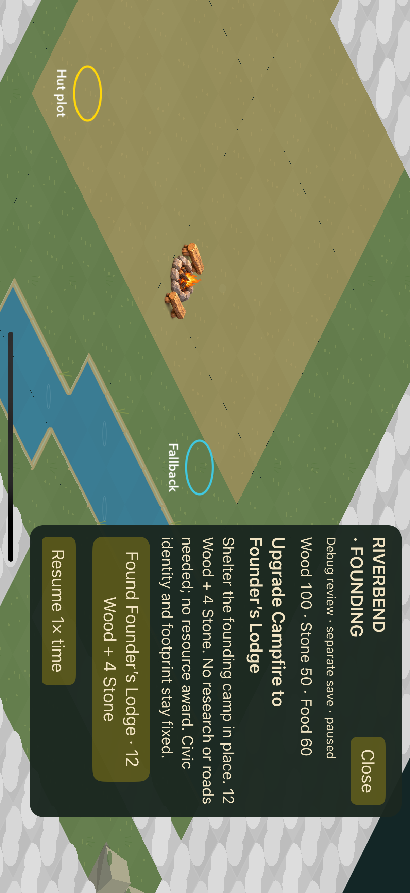
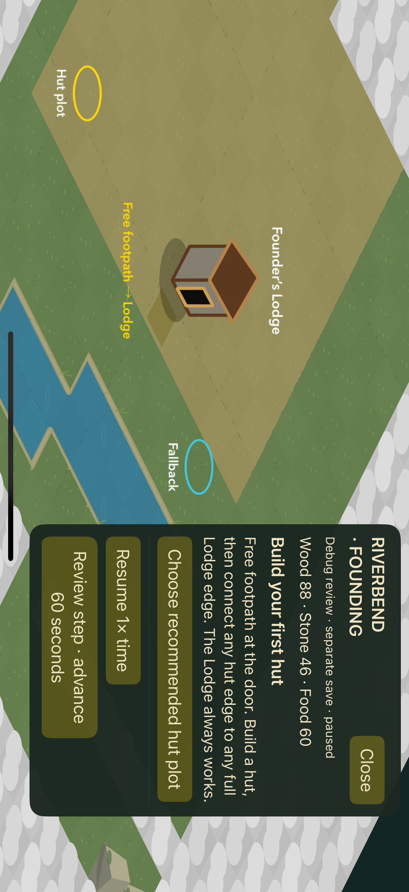
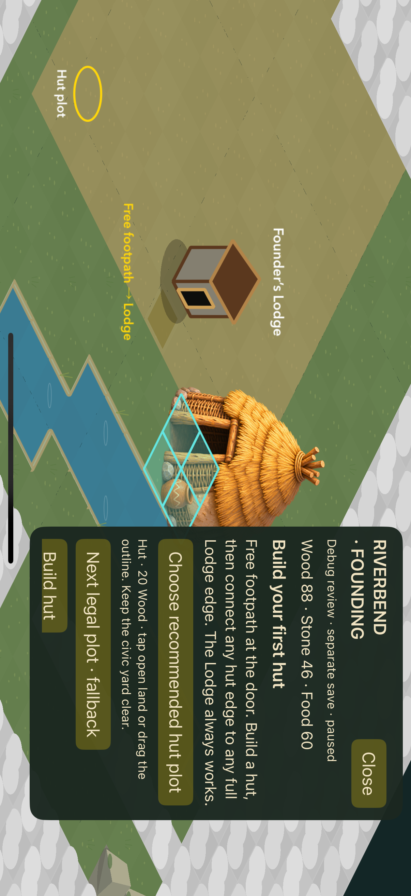
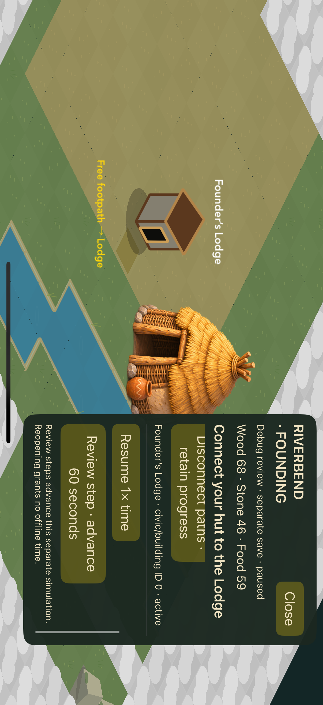
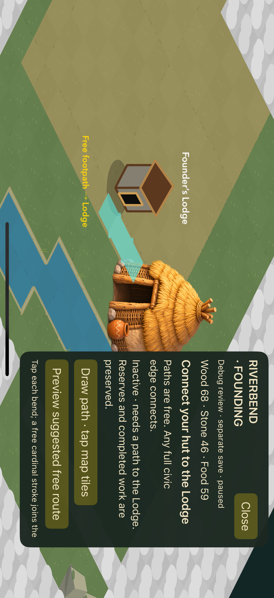
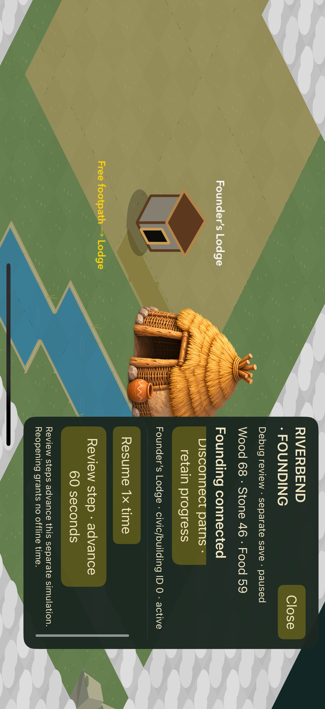
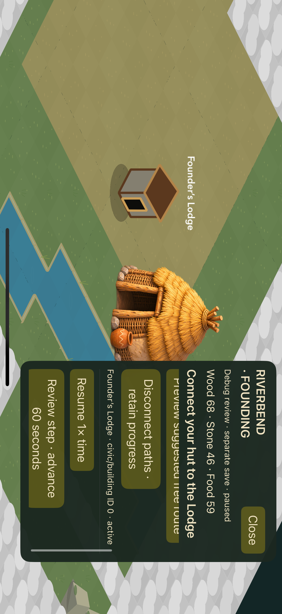
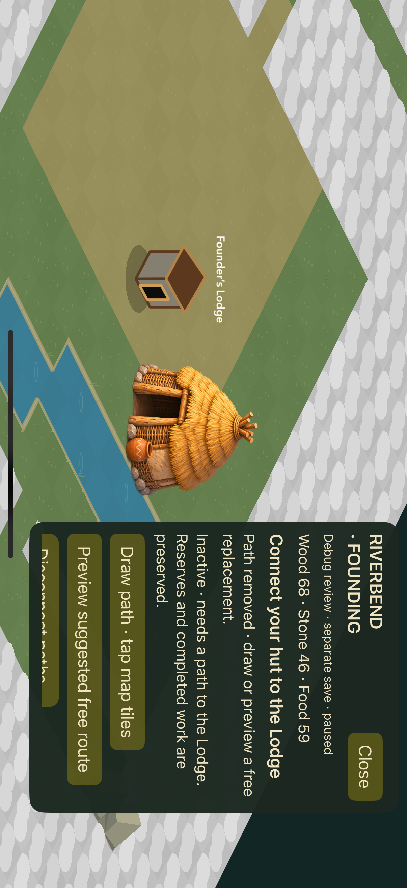
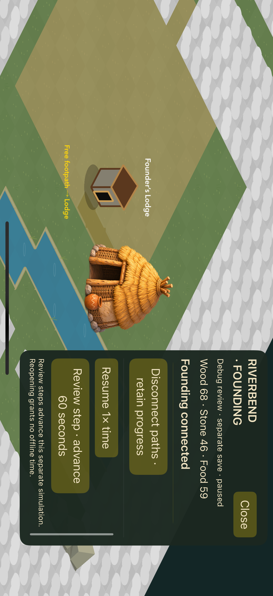
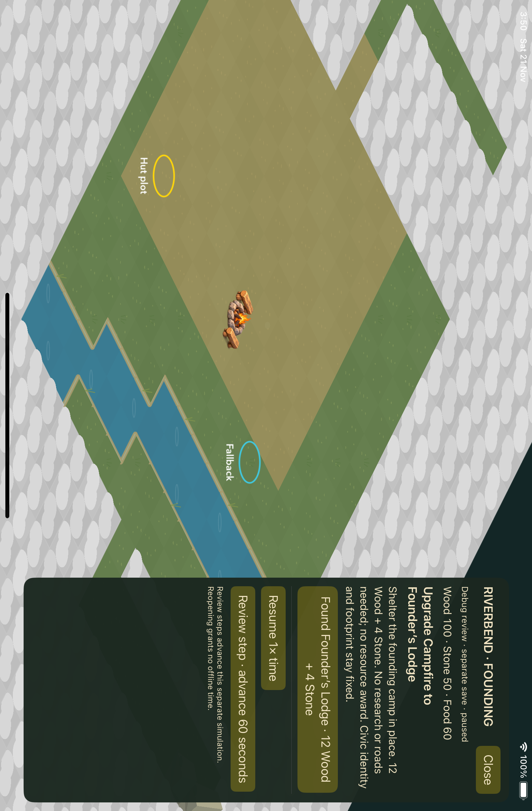
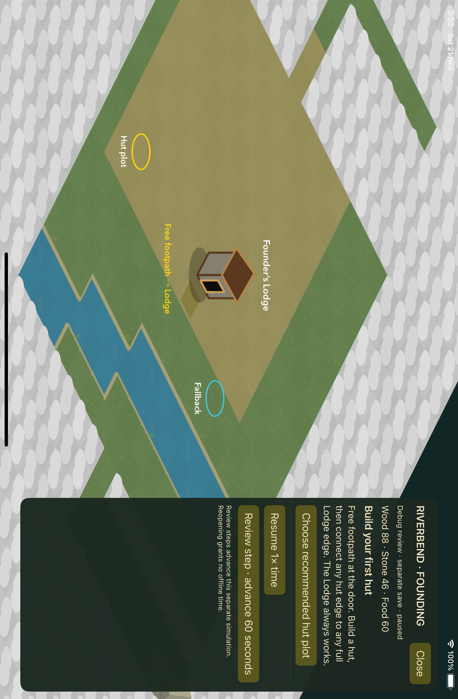
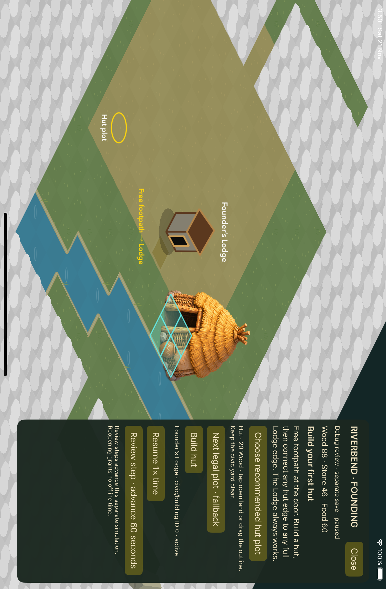
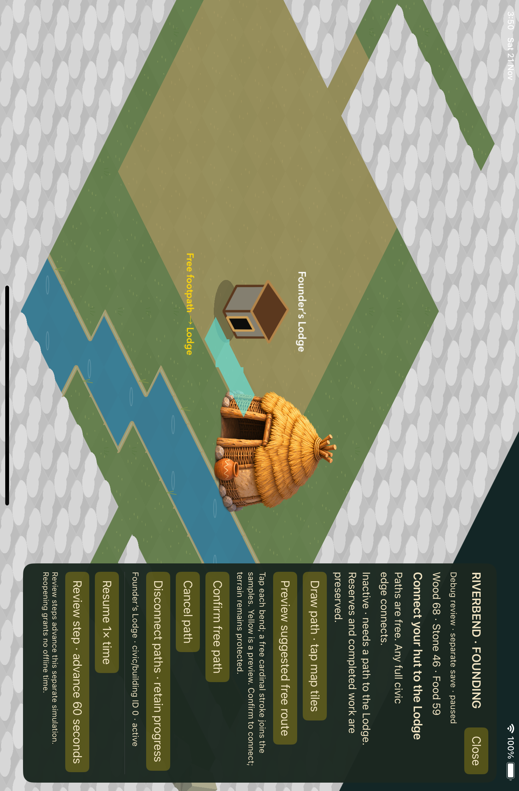
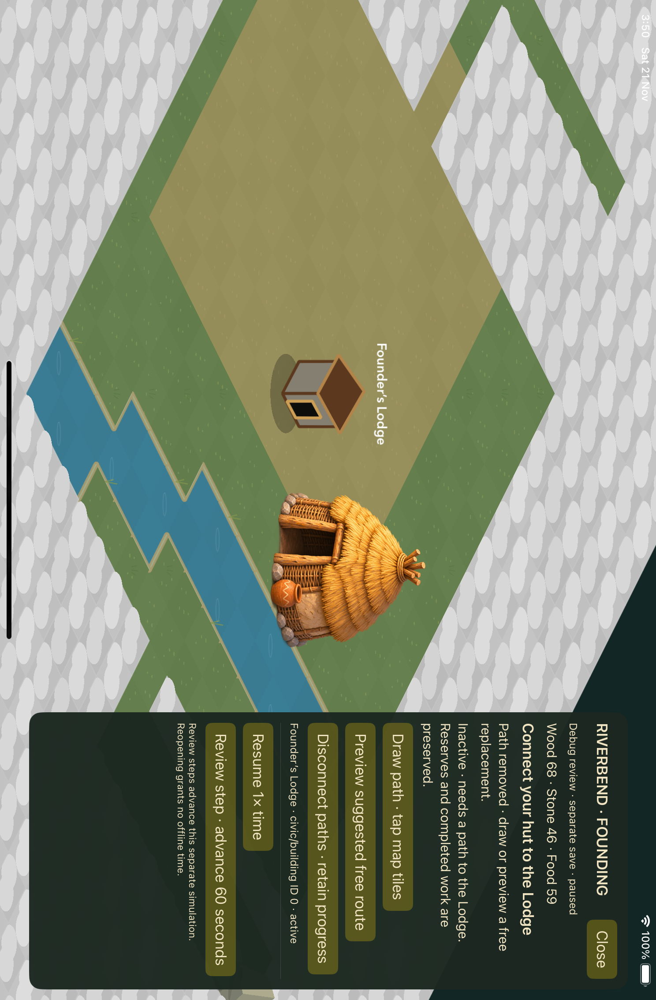
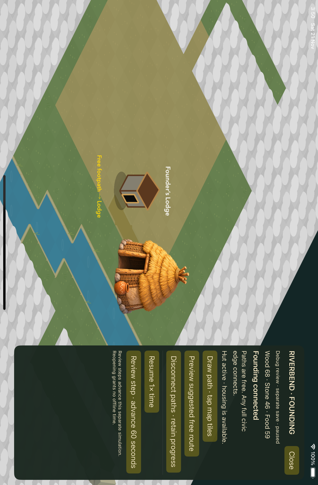
Reports are preserved unchanged. Raw logs are archived losslessly as .log.gz; their original local paths and commands remain in each JSON receipt. A failed/build-blocked attempt is separate from final passed verification.
| Attempt | Status | Executed / failures / skips |
|---|---|---|
| ui2-clearance-ipad | passed | ui-debug-1: 1 / 0 / 0 |
| ui2-clearance-phone | passed | ui-debug-1: 1 / 0 / 0 |
| ui2-core-debug-history-final | passed | core-debug: 0 / 0 / 0 |
| ui2-core-delivery | failed | core-debug: 0 / 0 / 0, core-release: 0 / 0 / 0 |
| ui2-core-final | passed | core-debug: 0 / 0 / 0, core-release: 0 / 0 / 0, release-api-exclusions: 0 / 0 / 0 |
| ui2-core-final-clearance | passed | core-debug: 0 / 0 / 0, core-release: 0 / 0 / 0, release-api-exclusions: 0 / 0 / 0 |
| ui2-core-final-pass | passed | core-debug: 0 / 0 / 0, core-release: 0 / 0 / 0, release-api-exclusions: 0 / 0 / 0 |
| ui2-core-full-1 | passed | core-debug: 0 / 0 / 0, core-release: 0 / 0 / 0, release-api-exclusions: 0 / 0 / 0 |
| ui2-core-verified | failed | core-debug: 0 / 0 / 0, core-release: 0 / 0 / 0 |
| ui2-entrance-red | failed | core-debug: 0 / 0 / 0 |
| ui2-founding-core-1 | failed | core-debug: 3 / 4 / 0 |
| ui2-founding-core-2 | passed | core-debug: 3 / 0 / 0 |
| ui2-founding-red | failed | core-debug: 0 / 0 / 0 |
| ui2-founding-red-authorized | failed | core-debug: 0 / 0 / 0 |
| ui2-native-1 | failed | ui-debug-1: 1 / 1 / 0, ui-debug-2: 1 / 0 / 0 |
| ui2-native-delivery | passed | ui-debug-1: 1 / 0 / 0, ui-debug-2: 1 / 0 / 0 |
| ui2-native-final | failed | ui-debug-1: 2 / 1 / 0, ui-debug-2: 2 / 0 / 0 |
| ui2-native-red | failed | ui-debug-1: 1 / 1 / 0 |
| ui2-native-verified | failed | ui-debug-1: 1 / 1 / 0, ui-debug-2: 1 / 0 / 0 |
| ui2-phone-final-pass | failed | ui-debug-1: 1 / 1 / 0 |
| ui2-release-ipad | passed | ui-release-1: 1 / 0 / 0 |
| ui2-release-phone | passed | ui-release-1: 1 / 0 / 0 |
| ui2-review-findings-red | failed | core-debug: 6 / 4 / 0 |
| ui2-stale-red | failed | core-debug: 0 / 0 / 0 |
| ui2-visual-clearance-red | failed | core-debug: 0 / 0 / 0 |
| ui2-yard-red | failed | core-debug: 0 / 0 / 0 |
| ui2-yard-red-runtime | failed | core-debug: 0 / 0 / 0 |
Eighteen earlier passed native originals are retained under captures/initial-phone and captures/initial-ipad. Those preceded the doorway-clearance correction and are not the final gallery.